标签索引
TAGS
共 336 个标签：Create 本体、原版物品、以及附属模组用到的 Forge 标签。点开看成员和用处。
Create 本体标签79
brittlecreate:brittle
movable empty collidercreate:movable_empty_collider
safe nbtcreate:safe_nbt
wrench pickupcreate:wrench_pickup
windmill sailscreate:windmill_sails
fan transparentcreate:fan_transparent
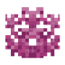
coralscreate:corals
动态结构可控create:contraption_controlled
single block inventoriescreate:single_block_inventories
table clothscreate:table_cloths
simple mounted storagecreate:simple_mounted_storage
阀门手柄create:valve_handles
染色桌布create:dyed_table_cloths
邮箱create:postboxes
座椅create:seats
toolboxescreate:toolboxes
安山岩create:andesite
asurinecreate:asurine
方解石create:calcite
crimsitecreate:crimsite
深板岩create:deepslate
闪长岩create:diorite
dripstonecreate:dripstone
花岗岩create:granite
limestonecreate:limestone
ochrumcreate:ochrum
scorchiacreate:scorchia
scoriacreate:scoria
凝灰岩create:tuff
传送带直立create:upright_on_belt
veridiumcreate:veridium
packagescreate:packages
crushed raw materialscreate:crushed_raw_materials
可打浆物create:pulpifiable
vanilla stripped logscreate:vanilla_stripped_logs
copycat denycreate:copycat_deny
vanilla stripped woodcreate:vanilla_stripped_wood
casingcreate:casing
tree attachmentscreate:tree_attachments
passive boiler heaterscreate:passive_boiler_heaters
smokingcreate:smoking
create ingotscreate:create_ingots
hauntingcreate:haunting
枕木create:sleepers
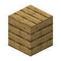
chest mounted storagecreate:chest_mounted_storage
可部署饮品create:deployable_drink
invalid for track pavingcreate:invalid_for_track_paving
pressurized air sourcescreate:pressurized_air_sources
sandpapercreate:sandpaper
blastingcreate:blasting
copycat allowcreate:copycat_allow
girdable trackscreate:girdable_tracks
non harvestablecreate:non_harvestable
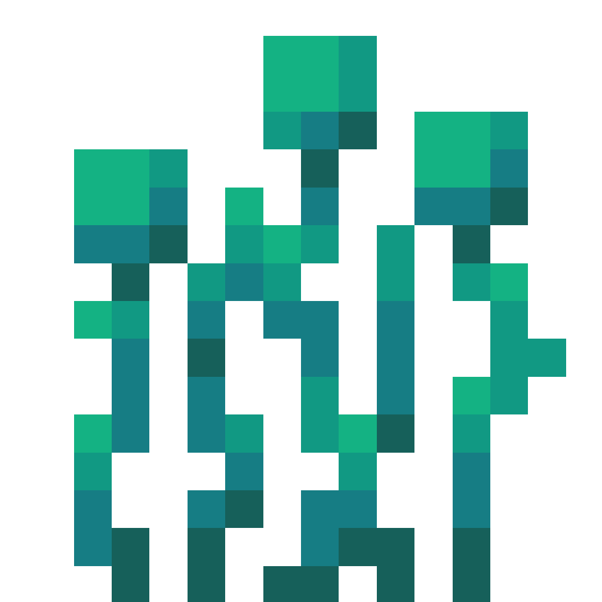
rootscreate:roots
specialcreate:special
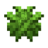
sugar cane variantscreate:sugar_cane_variants
trackscreate:tracks
alluritecreate:allurite
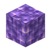
amethystcreate:amethyst
chain rideablecreate:chain_rideable
coralcreate:coral
lumierecreate:lumiere
modded stripped logscreate:modded_stripped_logs
modded stripped woodcreate:modded_stripped_wood
non movablecreate:non_movable
安山岩create:stone_types/andesite
asurinecreate:stone_types/asurine
方解石create:stone_types/calcite
crimsitecreate:stone_types/crimsite
深板岩create:stone_types/deepslate
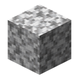
闪长岩create:stone_types/diorite
dripstonecreate:stone_types/dripstone
花岗岩create:stone_types/granite
limestonecreate:stone_types/limestone
ochrumcreate:stone_types/ochrum
scorchiacreate:stone_types/scorchia
scoriacreate:stone_types/scoria
凝灰岩create:stone_types/tuff
veridiumcreate:stone_types/veridium
原版物品标签108
slabsminecraft:slabs
stairsminecraft:stairs
完成找树教程minecraft:completes_find_tree_tutorial
原木minecraft:logs
抑制振动minecraft:dampens_vibrations
不可燃木材minecraft:non_flammable_wood
logs that burnminecraft:logs_that_burn
breaks decorated potsminecraft:breaks_decorated_pots
piglin lovedminecraft:piglin_loved
toolsminecraft:tools
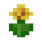
花minecraft:flowers
wallsminecraft:walls
饰纹陶罐材料minecraft:decorated_pot_ingredients
decorated pot sherdsminecraft:decorated_pot_sherds
boatsminecraft:boats
candlesminecraft:candles
陶瓦minecraft:terracotta
bannersminecraft:banners
bedsminecraft:beds
music discsminecraft:music_discs
trim templatesminecraft:trim_templates
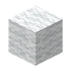
羊毛minecraft:wool
羊毛地毯minecraft:wool_carpets
小型花minecraft:small_flowers
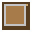
按钮minecraft:buttons
creeper drop music discsminecraft:creeper_drop_music_discs
doorsminecraft:doors
fencesminecraft:fences
trapdoorsminecraft:trapdoors
fence gatesminecraft:fence_gates
hanging signsminecraft:hanging_signs
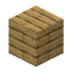
木板minecraft:planks
signsminecraft:signs
木按钮minecraft:wooden_buttons
木门minecraft:wooden_doors
木栅栏minecraft:wooden_fences
木压力板minecraft:wooden_pressure_plates
木台阶minecraft:wooden_slabs
木楼梯minecraft:wooden_stairs
木活板门minecraft:wooden_trapdoors
树叶minecraft:leaves
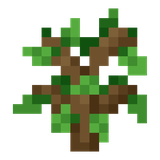
树苗minecraft:saplings
盔甲纹饰材料minecraft:trim_materials
chest boatsminecraft:chest_boats
泥土minecraft:dirt
noteblock top instrumentsminecraft:noteblock_top_instruments
cluster max harvestablesminecraft:cluster_max_harvestables
fishesminecraft:fishes
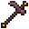
锄minecraft:hoes
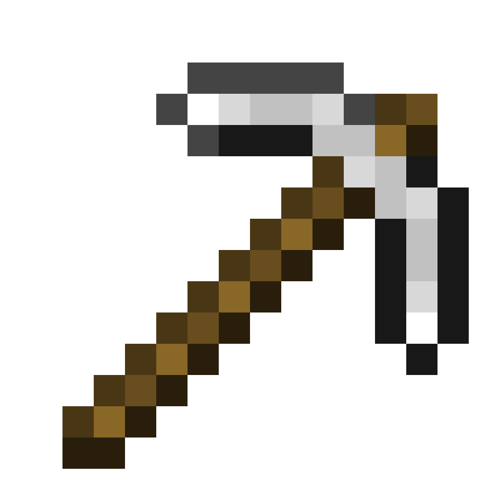
镐minecraft:pickaxes
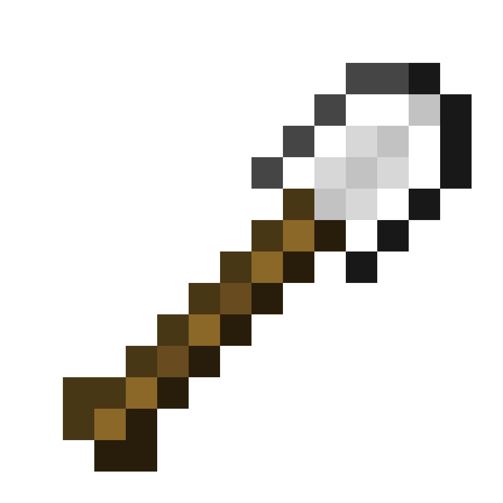
锹minecraft:shovels
剑minecraft:swords
村民可种种子minecraft:villager_plantable_seeds
beacon payment itemsminecraft:beacon_payment_items
书架书minecraft:bookshelf_books
免疫冰冻装备minecraft:freeze_immune_wearables
高花minecraft:tall_flowers
acacia logsminecraft:acacia_logs
birch logsminecraft:birch_logs
cherry logsminecraft:cherry_logs
crimson stemsminecraft:crimson_stems
dark oak logsminecraft:dark_oak_logs
jungle logsminecraft:jungle_logs
mangrove logsminecraft:mangrove_logs
railsminecraft:rails
spruce logsminecraft:spruce_logs
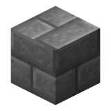
石砖minecraft:stone_bricks
warped stemsminecraft:warped_stems
铁砧minecraft:anvil
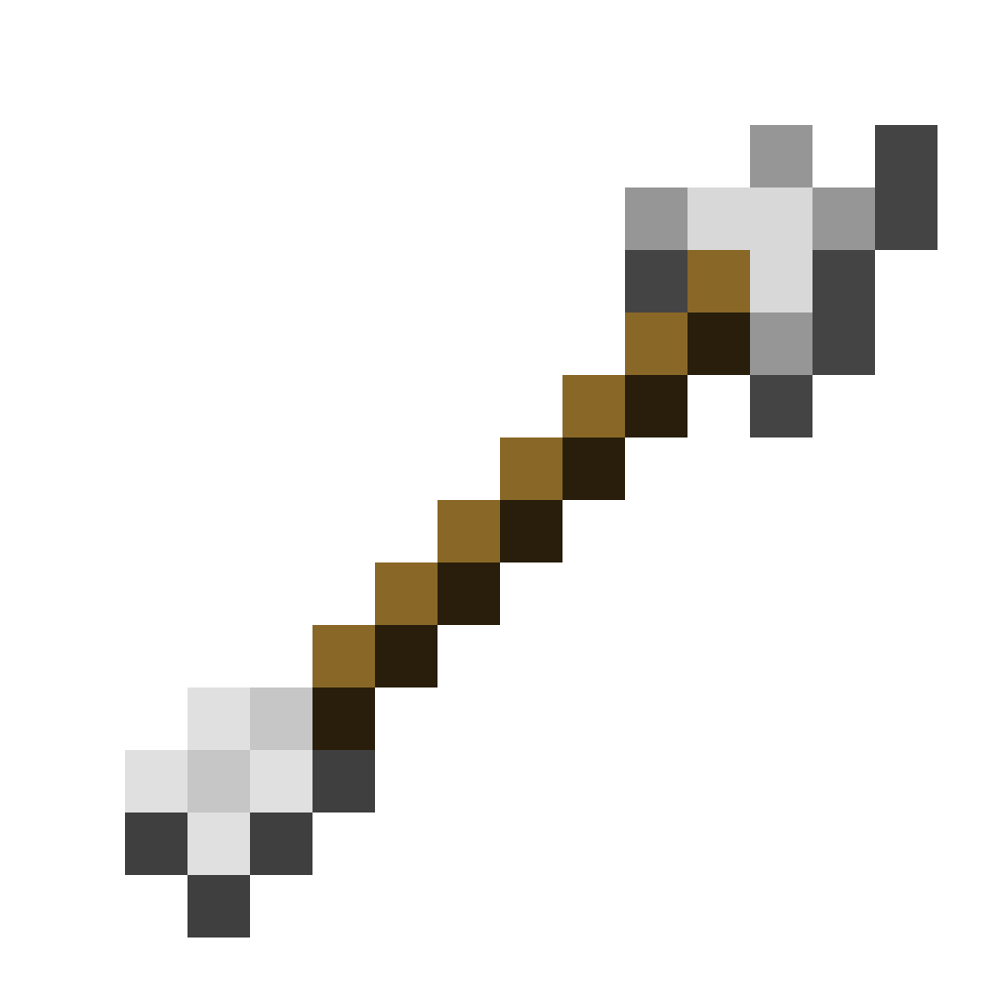
arrowsminecraft:arrows
金矿石minecraft:gold_ores
猪灵驱避物minecraft:piglin_repellents
沙子minecraft:sand
石制合成材料minecraft:stone_crafting_materials
石制工具材料minecraft:stone_tool_materials
bamboo blocksminecraft:bamboo_blocks
煤矿石minecraft:coal_ores
煤炭minecraft:coals
指南针类minecraft:compasses
铜矿石minecraft:copper_ores
creeper ignitersminecraft:creeper_igniters
钻石矿石minecraft:diamond_ores
绿宝石矿石minecraft:emerald_ores
狐狸食物minecraft:fox_food
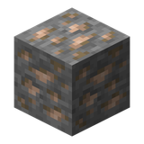
铁矿石minecraft:iron_ores
青金石矿石minecraft:lapis_ores
lectern booksminecraft:lectern_books
piglin foodminecraft:piglin_food
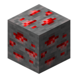
红石矿石minecraft:redstone_ores
可烧成玻璃minecraft:smelts_to_glass
灵魂火基底minecraft:soul_fire_base_blocks
石按钮minecraft:stone_buttons
疣块minecraft:wart_blocks
axolotl tempt itemsminecraft:axolotl_tempt_items
幼年猪灵无视minecraft:ignored_by_piglin_babies
sniffer foodminecraft:sniffer_food
all signsminecraft:all_signs
axesminecraft:axes
campfiresminecraft:campfires
cauldronsminecraft:cauldrons
洞穴藤蔓minecraft:cave_vines
climbableminecraft:climbable
火minecraft:fire
hoeminecraft:mineable/hoe
oak logsminecraft:oak_logs
pressure platesminecraft:pressure_plates
sword efficientminecraft:sword_efficient
woodenminecraft:wooden
附属模组 / Forge 标签149
stratagemcurios:stratagem
non double doorquark:non_double_door
sf doorstrainutilities:sf_doors
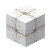
envelopescreatepropulsion:envelopes
coralscreate_ultimate_factory:corals
dead coralscreate_ultimate_factory:dead_corals
line blockstrainutilities:line_blocks
work blocksforge:work_blocks
suppressivepointblank:suppressive
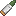
seaf artillery roundscreateliberate:seaf_artillery_rounds
precisionpointblank:precision
pipe blockcreate_cold_sweat:pipe_block
optical lenscreatepropulsion:optical_lens
scatteredpointblank:scattered
sf door crafting approvedtrainutilities:sf_door_crafting_approved
blueprintkinetic_pixel:blueprint
door ingrediantstrainutilities:door_ingrediants
hellbomb destroy blockscreateliberate:hellbomb_destroy_blocks
bladecreatepropulsion:blade
frameableframedblocks:frameable
platform blockstrainutilities:platform_blocks
fluid tank blockcreate_cold_sweat:fluid_tank_block
halitosiscreatehalitosis:fan_processing_catalysts/halitosis
ses supply itemscreateliberate:ses_supply_items
coalsforge:coals
ground beefforge:ground_beef
explosivepointblank:explosive
db doorstrainutilities:db_doors
iptdtrainutilities:iptd
isowall blockstrainutilities:isowall_blocks
hidden from recipe viewersc:hidden_from_recipe_viewers
blaze burner blockcreate_cold_sweat:blaze_burner_block
encased fancreate_cold_sweat:encased_fan
fluid container blockcreate_cold_sweat:fluid_container_block
steam engine blockcreate_cold_sweat:steam_engine_block
handscurios:hands
headcurios:head
beef pattyforge:beef_patty
面包forge:bread
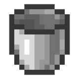
bucketsforge:buckets
cheeseforge:cheese
cinder doughforge:cinder_dough
煤炭forge:dusts/coal
saltforge:dusts/salt
saltpeterforge:dusts/saltpeter
sulfurforge:dusts/sulfur
graphiteforge:ingot/graphite
lightning rodsforge:lightning_rods
nuggetsforge:nuggets
storage blocksforge:storage_blocks
knivesforge:tools/knives
jei empty tagkinetic_pixel:jei_empty_tag
spring cropssereneseasons:spring_crops
super activatorscreate_enchantment_industry:blaze_composer/super_activators
salvagingcreate_enchantment_industry:fan_processing_catalysts/salvaging
dangerous to sescreateliberate:dangerous_to_ses
barrelsforge:barrels
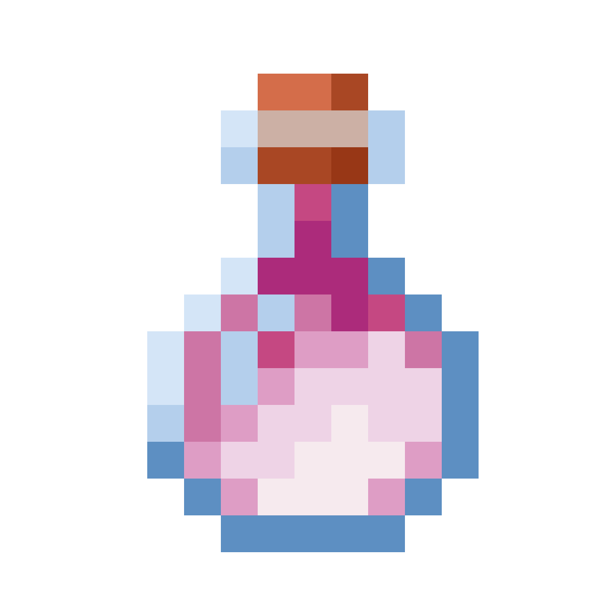
龙息forge:buckets/dragon_breath
红石粉forge:dusts/redstone
blackforge:dyes/black
blueforge:dyes/blue
brownforge:dyes/brown
cyanforge:dyes/cyan
grayforge:dyes/gray
greenforge:dyes/green
light blueforge:dyes/light_blue
light grayforge:dyes/light_gray
limeforge:dyes/lime
magentaforge:dyes/magenta
orangeforge:dyes/orange
pinkforge:dyes/pink
purpleforge:dyes/purple
redforge:dyes/red
whiteforge:dyes/white
yellowforge:dyes/yellow
eggsforge:eggs
feathersforge:feathers
小麦forge:flour/wheat
下界石英forge:gems/quartz
colorlessforge:glass/colorless
colorlessforge:glass_panes/colorless
火药forge:gunpowder
brassforge:ingots/brass
copperforge:ingots/copper
goldforge:ingots/gold
ironforge:ingots/iron
zincforge:ingots/zinc
ironforge:nuggets/iron
zincforge:nuggets/zinc
aluminumforge:ores/aluminum
ametrineforge:ores/ametrine
anthraciteforge:ores/anthracite
emeralditeforge:ores/emeraldite
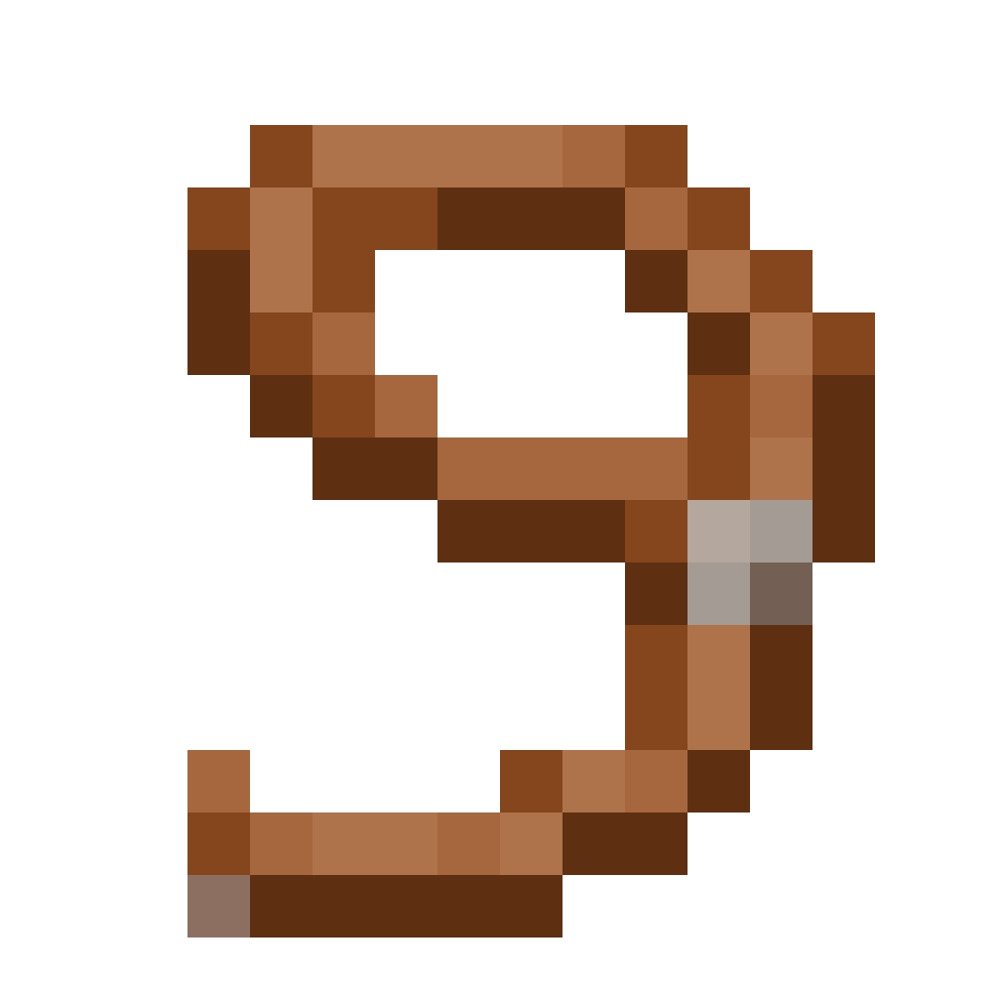
拴绳forge:ores/lead
ligniteforge:ores/lignite
nickelforge:ores/nickel
osmiumforge:ores/osmium
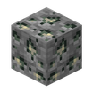
platinumforge:ores/platinum
quicksilverforge:ores/quicksilver
silverforge:ores/silver
tinforge:ores/tin
uraniumforge:ores/uranium
zincforge:ores/zinc
brassforge:plates/brass
goldforge:plates/gold
ironforge:plates/iron
黑曜石forge:plates/obsidian
aluminumforge:raw_materials/aluminum
copperforge:raw_materials/copper
goldforge:raw_materials/gold
ironforge:raw_materials/iron
拴绳forge:raw_materials/lead
nickelforge:raw_materials/nickel
osmiumforge:raw_materials/osmium
platinumforge:raw_materials/platinum
quicksilverforge:raw_materials/quicksilver
silverforge:raw_materials/silver
tinforge:raw_materials/tin
uraniumforge:raw_materials/uranium
zincforge:raw_materials/zinc
colorlessforge:sand/colorless
redforge:sand/red
brassforge:storage_blocks/brass
ironforge:storage_blocks/iron
raw aluminumforge:storage_blocks/raw_aluminum
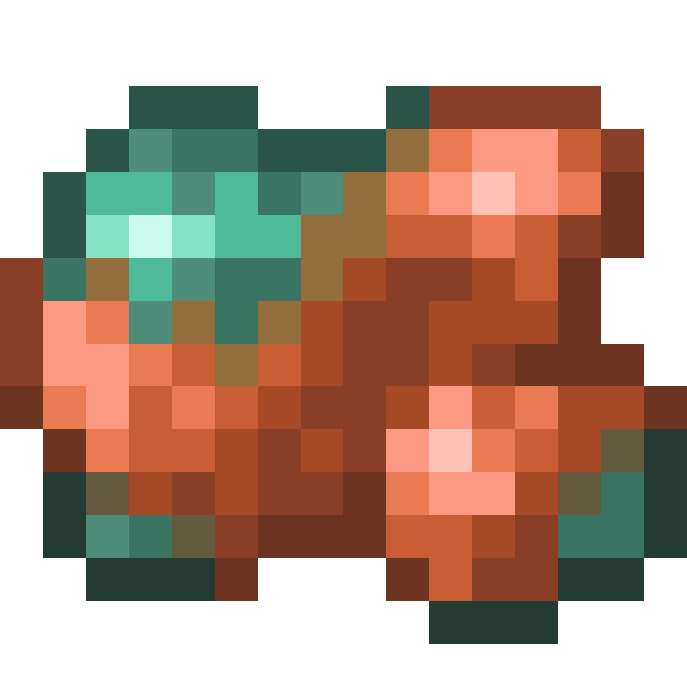
粗铜forge:storage_blocks/raw_copper
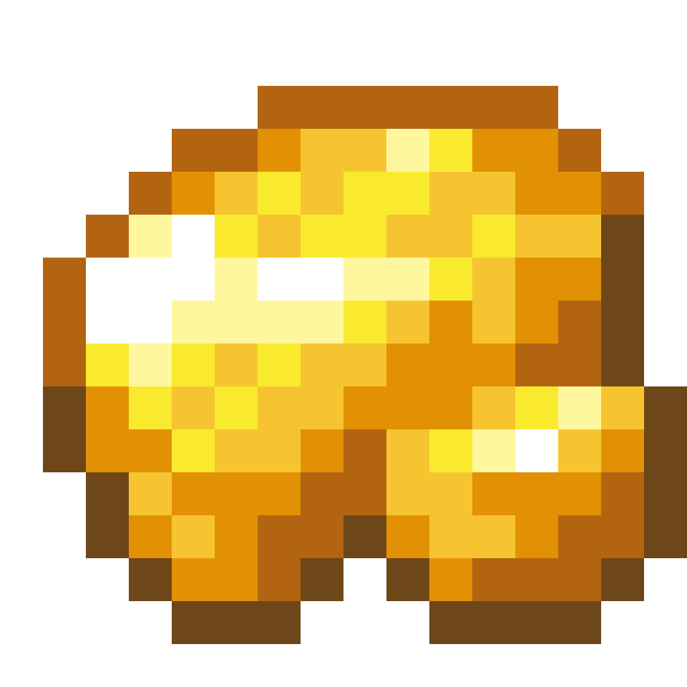
粗金forge:storage_blocks/raw_gold
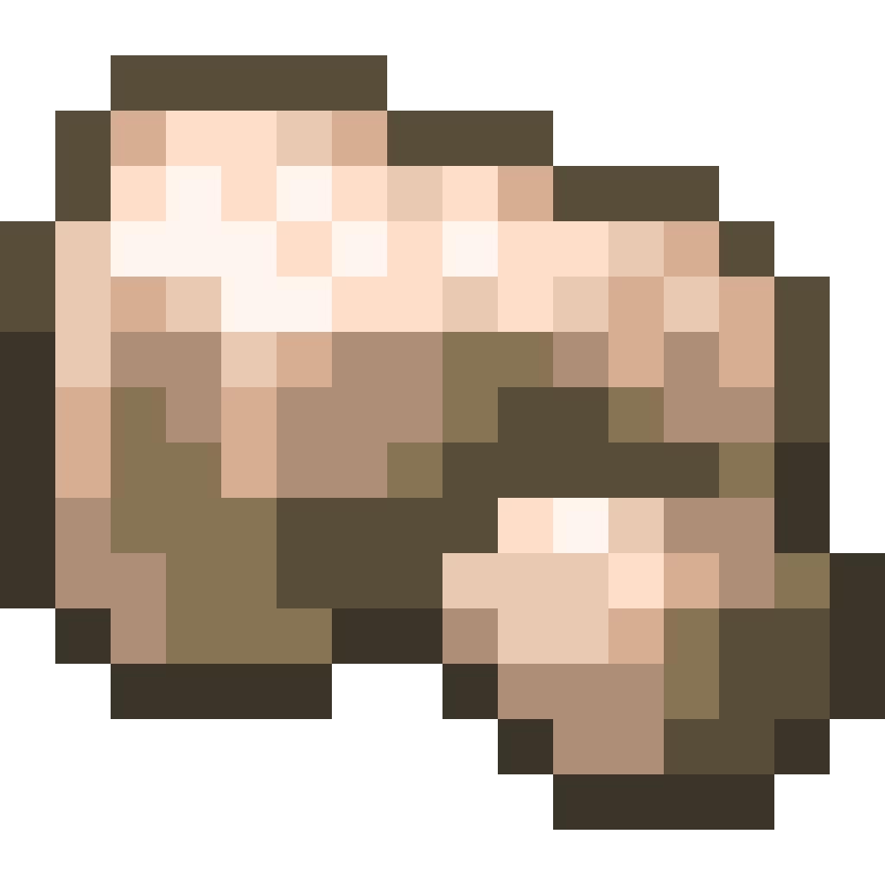
粗铁forge:storage_blocks/raw_iron
raw leadforge:storage_blocks/raw_lead
raw nickelforge:storage_blocks/raw_nickel
raw osmiumforge:storage_blocks/raw_osmium
raw platinumforge:storage_blocks/raw_platinum
raw quicksilverforge:storage_blocks/raw_quicksilver
raw silverforge:storage_blocks/raw_silver
raw tinforge:storage_blocks/raw_tin
raw uraniumforge:storage_blocks/raw_uranium
raw zincforge:storage_blocks/raw_zinc
zincforge:storage_blocks/zinc
线forge:string
stripped logsforge:stripped_logs
stripped woodforge:stripped_wood
wrenchforge:tools/wrench